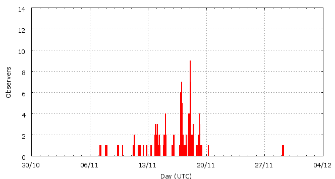

[ www.imo.net ]
This page shows automated results of the Leonids 2010, based on visual observations by volunteers astronomers collected through the report form of the International Meteor Organization (IMO). The information on this page is generated automatically; for scientific use please refer to manual analyses published in scientific journals (such as WGN). Send your feedback regarding this page to Geert Barentsen.
Page contents:
Page generated: 2010 December 10 at 20:20 UTC.
The graph below shows the ZHR (Zenithal Hourly Rate), which is the number of meteors an observer would see under a very dark sky with the radiant of the shower in zenith.
ZHRmax = 32 based on 514 Leonids reported in 206 intervals, assuming population index r = 2.0

| Time (UTC) | Solarlon | nINT | nLEO | ZHR | Particle density | |
|---|---|---|---|---|---|---|
| 2010-11-07 15:45 | 224.980 | 6 | 2 | 2 | ±1 | 2 / 109·km3 |
| 2010-11-09 09:58 | 226.746 | 2 | 2 | 2 | ±1 | 2 / 109·km3 |
| 2010-11-11 14:13 | 228.935 | 8 | 11 | 4 | ±1 | 3 / 109·km3 |
| 2010-11-12 20:54 | 230.221 | 8 | 5 | 4 | ±2 | 3 / 109·km3 |
| 2010-11-13 23:38 | 231.341 | 20 | 37 | 5 | ±1 | 4 / 109·km3 |
| 2010-11-14 19:46 | 232.186 | 23 | 35 | 6 | ±1 | 5 / 109·km3 |
| 2010-11-15 23:50 | 233.364 | 10 | 36 | 11 | ±2 | 9 / 109·km3 |
| 2010-11-16 21:24 | 234.269 | 18 | 37 | 11 | ±2 | 9 / 109·km3 |
| 2010-11-17 04:29 | 234.567 | 11 | 35 | 15 | ±2 | 12 / 109·km3 |
| 2010-11-17 11:08 | 234.845 | 12 | 35 | 17 | ±3 | 13 / 109·km3 |
| 2010-11-17 21:52 | 235.296 | 8 | 36 | 26 | ±4 | 20 / 109·km3 |
| 2010-11-18 01:40 | 235.456 | 8 | 35 | 32 | ±5 | 25 / 109·km3 |
| 2010-11-18 02:42 | 235.500 | 15 | 36 | 15 | ±2 | 12 / 109·km3 |
| 2010-11-18 04:31 | 235.576 | 14 | 38 | 20 | ±3 | 16 / 109·km3 |
| 2010-11-18 08:14 | 235.732 | 17 | 37 | 17 | ±3 | 13 / 109·km3 |
| 2010-11-18 15:27 | 236.035 | 14 | 40 | 14 | ±2 | 11 / 109·km3 |
| 2010-11-19 04:47 | 236.595 | 5 | 35 | 17 | ±3 | 13 / 109·km3 |
| 2010-11-19 12:56 | 236.938 | 6 | 22 | 10 | ±2 | 8 / 109·km3 |
| 2010-11-29 06:00 | 246.752 | 1 | 0 | 4 | ±4 | 3 / 109·km3 |
The reported intervals are automatically added together into the bins shown above, based on the number of meteors and the distribution of the intervals. For each bin, the following parameters are computed:
Data has been received from 43 observers in 19 countries. Thank you for your efforts!
Note: click on the map for an interactive version.

| Observer | Country | Teff | nLEO |
|---|---|---|---|
| Mina Alizadeh | Iran | 0.66h | 3 |
| Asmita Bhandare | India | 1.73h | 5 |
| Raka Dabhade | India | 1.83h | 2 |
| Anderson Dantas | Brazil | 3.91h | 34 |
| Rucha Deshpande | India | 2.07h | 4 |
| Peter Detterline | United States | 1.50h | 8 |
| C B Devgun | India | 1.25h | 35 |
| Suraj Dhiwar | India | 1.73h | 7 |
| Todor Dimitrov | Bulgaria | 0.82h | 4 |
| Shlomi Eini | Israel | 2.55h | 23 |
| Reyhaneh Fallah | Iran | 1.16h | 12 |
| William Godley | United States | 1.75h | 6 |
| Stevan Golubovic | Serbia | 4.89h | 34 |
| Sylvie Gorkova | Czech Republic | 2.00h | 0 |
| Mitja Govedic | Slovenia | 1.37h | 9 |
| Wayne T. Hally | United States | 12.70h | 20 |
| Vilem Heblik | Czech Republic | 12.00h | 36 |
| Ken Hodonsky | United States | 2.15h | 2 |
| Jakub Koukal | Czech Republic | 17.00h | 63 |
| Anna S. Levina | Israel | 2.80h | 19 |
| Semion Levin | Israel | 1.49h | 14 |
| Mike Linnolt | United States | 1.57h | 13 |
| Jer Nan Lou | Taiwan | 0.43h | 5 |
| Jose Luis Maestre Garcia | Spain | 1.13h | 12 |
| Qiang Ma | China | 4.00h | 6 |
| Pierre Martin | Canada | 4.91h | 4 |
| Jai Mehta | India | 1.66h | 1 |
| Koen Miskotte | Netherlands | 5.05h | 0 |
| Hermitanio Quinto | Philippines | 0.92h | 3 |
| Ella Ratz | Israel | 0.80h | 4 |
| Jurgen Rendtel | Germany | 9.78h | 86 |
| Branislav Savic | Serbia | 5.33h | 29 |
| Andrey Semenuta | Kazakhstan | 1.30h | 0 |
| Sanket Sen | India | 1.02h | 1 |
| Costantino Sigismondi | Italy | 1.05h | 0 |
| Wesley Stone | United States | 1.44h | 9 |
| Richard Taibi | United States | 6.63h | 26 |
| Shigeo Uchiyama | Japan | 0.67h | 7 |
| Michel Vandeputte | Belgium | 1.40h | 1 |
| Kristina Veljkovic | Serbia | 1.33h | 13 |
| Valentin Velkov | Bulgaria | 0.95h | 7 |
| Xingkai Wang | China | 0.77h | 3 |
| Weizhou Zeng | China | 2.18h | 2 |
Create your own analysis. The files below can be opened using Excel:
leo2010_rate.csv (number of meteors per interval per observer)
leo2010_magn.csv (number of meteors per magnitude bin per observer)
The information on this page may be distributed freely provided credit is given to the International Meteor Organization (IMO) and, when possible, to the individual observers. The computer facilities to generate this page are provided by the Urania Public Observatory in Belgium and Armagh Observatory in Northern Ireland.
References: